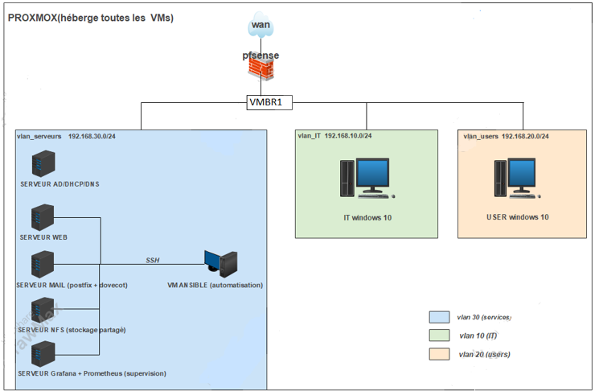
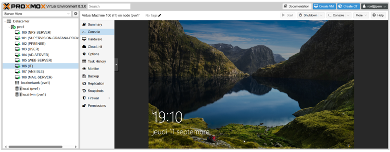
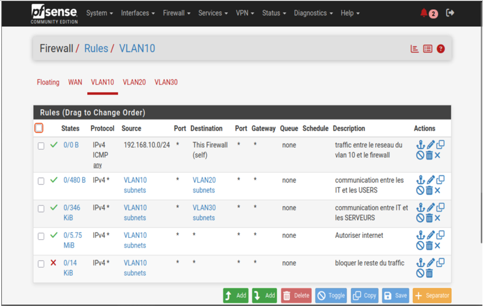
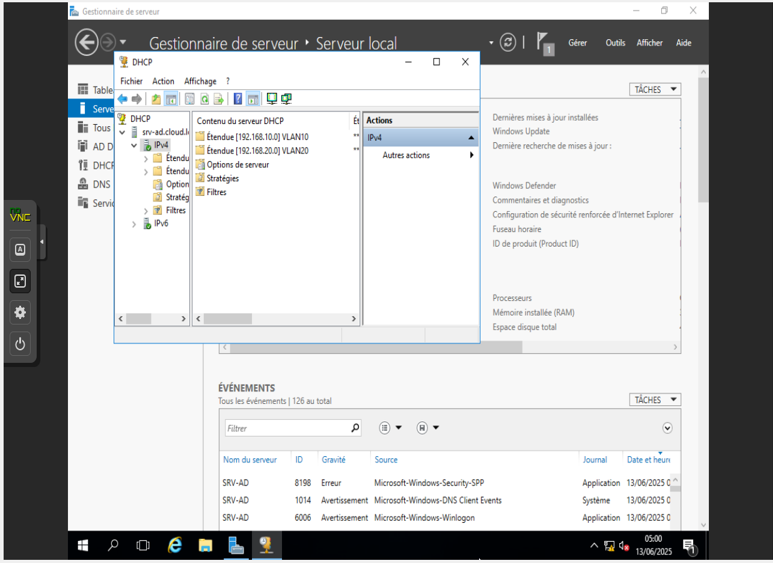
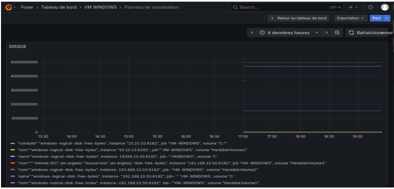
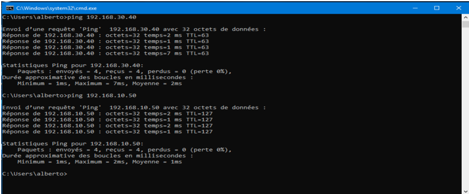

Alberto Yvan Sombsi
Administrateur Systèmes, Réseaux & Infrastructure Cloud Privée
SOMBSI



Modélisation complète de l'infrastructure cloud hébergée sur l'hyperviseur Proxmox, intégrant le cœur de routage/filtrage pfSense et l'ensemble des segments de production isolés par VLANs.

Console d'administration centrale regroupant les machines virtuelles (VM) et les allocations de ressources matérielles (CPU, RAM, Stockage NFS partagé) pour les différents environnements serveurs.

Configuration fine des pare-feux applicatifs sur pfSense. Isolation et routage inter-VLAN (IT, Users, et Services) avec règles strictes de contrôle de flux et translation NAT pour l'accès WAN extérieur.

Déploiement centralisé de Windows Server gérant les rôles Active Directory (AD DS), DNS interne et l'attribution dynamique d'adresses réseau via DHCP Relay.

Automatisation complète du déploiement des services applicatifs (serveur Web Apache/PHP, serveur de messagerie Postfix/Dovecot relié à l'AD via LDAP, et partages NFS) via des Playbooks YAML.

Collecte d'indicateurs de performance en temps réel à l'aide de Prometheus et affichage dynamique des tableaux de bord Grafana pour la gestion prédictive des incidents (seuils de charge CPU, RAM, disques).

Validation opérationnelle de l'ensemble des modules du Cloud privé : tests de connectivité inter-VLAN réussis, routage internet sécurisé et disponibilité applicative globale.
Amazon Web Services